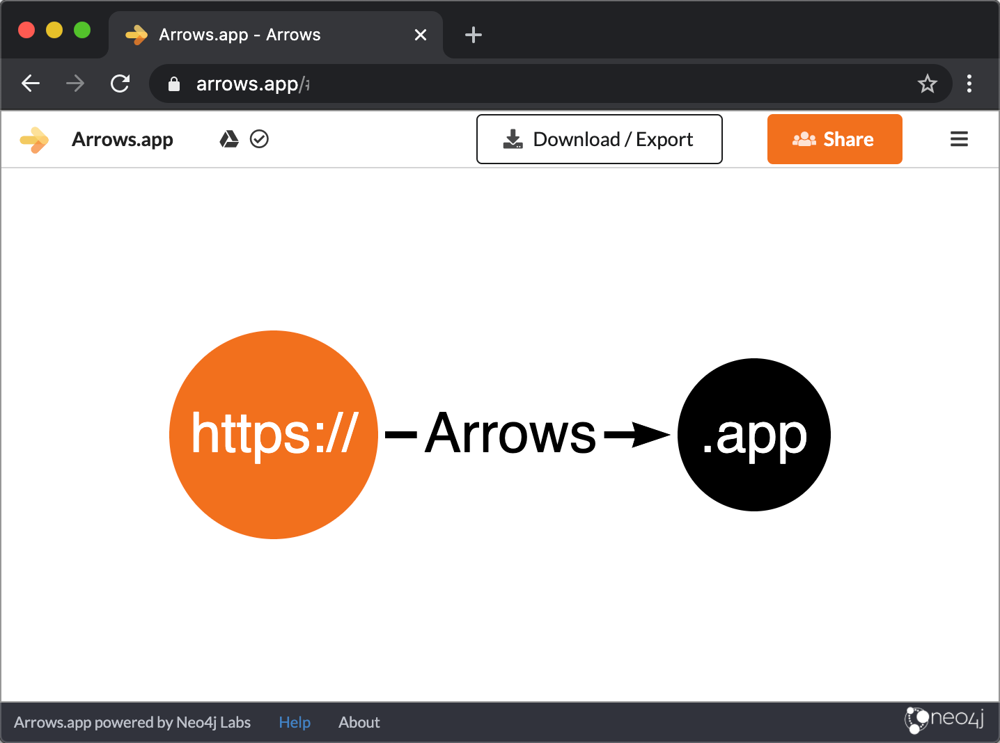

Web-based tool for drawing pictures of graphs
Intuitive drawing with a mouse.
Draw: nodes, relationships, properties, labels.
Control: sizes, layouts, colors.
Use images in documents or presentations.
Run Cypher to create graphs in Neo4j
Arrows.app is for drawing pictures of graphs. For visualising your Neo4j graph database, please see our pages about Neo4j Bloom, Neo4j Browser, and Graph Visualization in general.
Arrows.app powered by Neo4j Labs.
Arrows.app is available in an early preview state, subject to the terms of the Neo4j Labs EULA.
For feedback, please submit issues via our github page.